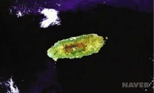
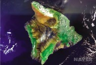
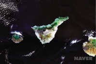
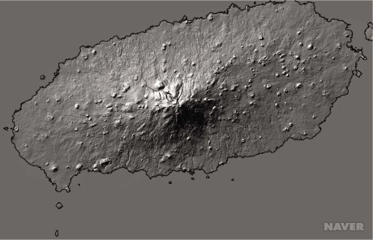
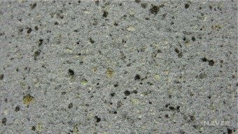
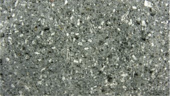

제주도는 한반도에서 남쪽으로 약 90km 떨어진 곳에 위치하며,
한라산(해발 1,950m)을 중심으로 남남서-북북동의 장축(약 73km)과 약 41km의 폭을 지닌 타원형의 본섬과 8개의 유인도로 이루어져 있다.
제주도의 면적은 1,847km2 으로, 휴양지로 유명한 화산섬인 태평양의 하와이섬(Big Island)과
대서양의 테너리페 카나리섬(Tenerife Canary Island)의 면적에 비해 각각 18%, 90%의 크기이다.
제주도는 비록 바다에 의해 둘러싸여 있지만 대륙붕 위에서 이루어진 대륙지각내 화산활동
(continental intraplate volcanism)에 의해 만들어진 화산섬이기 때문에,
그 지질학적인 특징은 울릉도, 독도, 그리고 다른 해양 화산도(예, 하와이섬)와는 근본적인 차이를 지닌다.
제주도 중앙부에는 한라산이 있고 368개의 오름이 섬 전체에 고루 분포해 있다.
한라산 정상의 백록담은 화구로서 지름이 575m이고 깊이가 100m이다.
제주도는 동북동 방향으로 신장된 타원형의 형태를 이루며, 한라산을 정점으로 가운데가 볼록한 형태를 하고 있다.
제주도를 멀리서 보면 서쪽과 동쪽은 완만하고, 한라산에서 제주시와 서귀포시 쪽으로는 험준하다.
서쪽과 동쪽의 완만한 저지대 지역에는 파호이호이 용암이 굳어서 된 암석이, 북쪽과 남쪽 지역에는 아아 용암이 굳어서 된 암석이 주로 분포한다.
동일 축적으로 나타낸 Landsat-7 위성 영상
  
용암의 표면에는 작은 기공이 많은데, 이 기공은 용암 표면에서 50cm 정도 범위에 주로 형성되어 있다.
제주도의 용암은 그 조성과 형성시 물리적 특징에 따라 사장석, 단사휘석, 감람석이 반정 광물로 흔히 나타난다.
현무암질 용암은 파호이호이 용암과 아아 용암으로 구분될 수 있다.

한편, 온도가 1,000℃에 이르는 용암이 바닷물 속으로 흘러 들어가면 급히 식어 투명한 작은 알갱이로 산산조각 나게 되는데,
이런 현상은 뜨거운 유리잔을 찬물에 넣으면 깨지는 현상과 같다. 이렇게 만들어진 유리조각을 유리질쇄설암이라 하며,
제주도에서는 현무암질 용암에 의해 만들어졌기 때문에 검은색으로 나타난다.
물 속으로 들어간 용암은 베게 모양을 이루기도 하는데, 시추에서 베게용암 암석이 확인된다.

